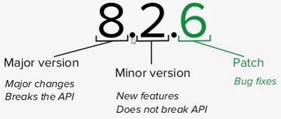

Setup
Install
Update
npm install npm@latest -g
Check version
node -v
npm -v
.gitignore
node_modules/
config
Set
npm config set init-author-name "James Layne"
npm config set init-license "MIT"Get
npm config get init-author-nameDefault
npm config delete init-author-nameinit
Creates package.json
manual
npm initauto
npm init -yinstall
Download dependencies
Downloads all dependencies specified in package.json
/* downloads all dependencies */
npm install
/* downloads non dev dependencies */
npm install --production
Production dependencies
Adds dependency to package.json
npm install 'package'
/* before npm 5.0 */
npm install 'package' --save
Development dependencies
Not deployed to production.
Adds dependency to package.json dev section.
npm install 'package' --save-dev
Global dependencies
Modules for development.
Modules to use in the console.
Installs on machine not in node_modules.
Not added to package.json
npm install -g 'package'
/* shows global install dir */
npm root -g
Install specific version
npm install 'package@version'
/* example */
npm install lodash@4.17.3
uninstall
Production dependencies
npm uninstall 'package'
/* before npm 5.0 */
npm uninstall 'package' --saveDevelopment dependencies
npm uninstall 'package' --save-devGlobal dependencies
npm uninstall -g 'package'update
npm update 'package'
list
/* show all dependencies */
npm list
/* top level dependencies 1, 2, .. */
npm list --depth 0
Versioning
// package.json
"package": "^4.17.4"

Prefix modifier
| ~ | Updates Patch. |
|---|---|
| ^ | Updates Minor & Patch (Default). |
| * | Updates Major, Minor & Patch |
| none | Installs exact version. |
Global Modules
| sass | npm install -g sass |
|---|---|
| nodemon | restarts Node app when file changes |
| live server | refresh browser when file changes |
nvm
Tool to switch between different node versions.
Node.js: require/export
Import
// built-in or npm modules
var http = require('http');
// custom module, same dir
var dt = require('./module');
// custom module, other dir
var dt = require('/path/module');
Export
exports.myDateTime = () => {...};
// multiple functions
module.exports = {
add,
subtract
}
axios
For request
date-fns
For dates
dotenv
Envirotment variables
uuid
For unique identifiers
classnames
For React ????
socket.io
For sockets